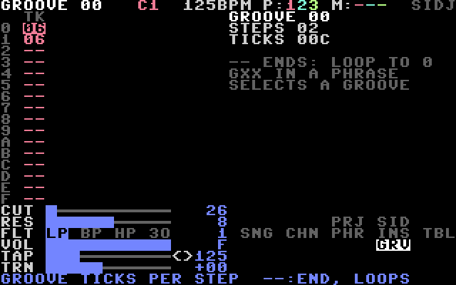
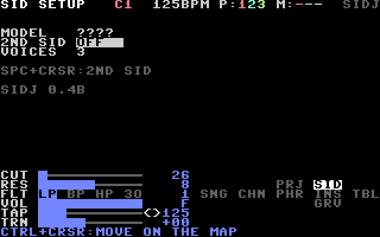
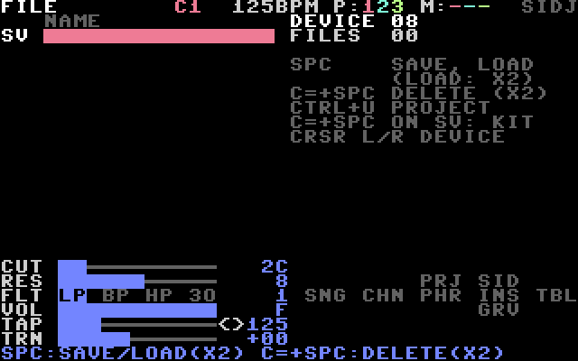

CHAPTER 5: THE SCREENS
5.1 Moving between screens
The screens are arranged as a map. Hold CTRL and press a CRSR key to move on the map. The bottom right of the screen shows the map, with the current screen reversed:
PRJ SID
SNG CHN PHR INS TBL
GRV
| From | CTRL + UP | CTRL + DOWN | CTRL + LEFT | CTRL + RIGHT |
|---|---|---|---|---|
| SONG | – | – | live mode on/off | CHAIN |
| CHAIN | – | – | SONG | PHRASE |
| PHRASE | PROJECT | GROOVE | CHAIN | INSTR |
| INSTR | SID SETUP | GROOVE | PHRASE | TABLE |
| TABLE | – | – | INSTR | – |
| GROOVE | back | – | – | – |
| PROJECT | – | PHRASE | – | SID SETUP |
| SID SETUP | – | INSTR | PROJECT | – |
| FILE | PROJECT | – | – | – |
Moving right opens the item under the cursor: the chain on the SONG screen, the phrase on the CHAIN screen, the instrument of the phrase step, the table of the instrument. CTRL + DOWN on a phrase step with a G command opens that groove.
Help pages (REU). Press F2 (SHIFT + F1), or click the help line at the bottom, for a full page of help on the screen you are on. CRSR UP/DOWN turn the pages; any other key closes them. SIDJ loads the pages from the file SIDJ.HLP when it starts, so copy it to the disk next to SIDJ. Without an REU the help line shows NEEDS REU; without the file, NO HELP FILE.
The left half of the screen is the editor. The right half shows the chain, phrase or instrument under the cursor. Rows 18 to 23 hold the Live FX faders (10.4) and the map.

5.2 SONG
256 rows (00–FF), one column per channel. Each field holds a chain number (00–7F) or -- (empty).
| Keys | Effect |
|---|---|
SPACE, SPACE on -- | new chain |
| RETURN | play from the cursor row, or stop |
| C= + UP / DOWN | page 16 rows, or jump to the previous / next bookmark if there are any |
| C=, C=, C= | set or remove a bookmark on this row |
| CTRL + LEFT | live mode on/off (CHAPTER 10) |

5.3 CHAIN
16 steps. Each step has a phrase number (00–FE) and a transpose. The chain ends at the first empty step.
| Keys | Effect |
|---|---|
SPACE, SPACE on -- | new phrase |
| SPACE + LEFT / RIGHT on transpose | −1 / +1 semitone |
| SPACE + UP / DOWN on transpose | +12 / −12 semitones |
| C= + UP / DOWN | first / last step |
| RETURN | play or stop this channel |
| SHIFT + F3 (F4) | piano mode on / off, see 10.5 |
| SHIFT + F5 (F6) | record into the playing phrase (REU), see 10.5 |

5.4 PHRASE
16 steps (0–F). Each step has a note, an instrument, a command letter and a command value.
| Field | How to edit |
|---|---|
| note | SPACE + LEFT/RIGHT: semitone. SPACE + UP/DOWN: octave. Type A–G and 0–7. |
| instrument | 00–3F. A new note gets the last instrument used. CTRL + RIGHT edits it. |
| command | type a letter (CHAPTER 8). C= + SPACE clears it. |
| value | type two hex digits, or SPACE + LEFT/RIGHT (±1), SPACE + UP/DOWN (±10). |
| Keys | Effect |
|---|---|
| CLR/HOME | list view / grid view |
| SHIFT + CLR/HOME | drum view (REU), see 4.2 |
| C= + UP / DOWN | first / last step |
| RETURN | play or stop this channel |
The grid view shows the 16 steps as a 4 × 4 grid of boxes. Each box shows the note (coloured by octave), the instrument when it changes, and the command. The playing step is white.
- The CRSR keys move between boxes (UP/DOWN: 4 steps).
- C= + LEFT/RIGHT selects the field in the box: note, instrument, command or value.
- SPACE, SPACE + CRSR, C= + SPACE and typing work as in the list.
- Marking blocks is not possible in the grid.


5.5 INSTR
Edits one of 64 instruments (00–3F). The fields are described in CHAPTER 7.
| Keys | Effect |
|---|---|
| C= + LEFT / RIGHT | previous / next instrument |
| SPACE | play the instrument |
CTRL + SPACE on PRESET | factory kit (7.3) |
Rows 13 to 17 show which instruments are in use (+). The current one is reversed.

5.6 TABLE
16 steps with six columns: control byte (CT), transpose (TR) and two command/value pairs (7.4). The title row holds the table number. C= + LEFT/RIGHT selects the previous or next table. Each edit plays the current instrument.

5.7 GROOVE
The ticks per step (CHAPTER 9). The title row holds the groove number. C= + LEFT/RIGHT selects the previous or next groove. -- ends the groove; it then starts again at step 0.

5.8 PROJECT
| Field | Use |
|---|---|
| TEMPO | 40–295 BPM. Type three digits, or SPACE + LEFT/RIGHT (±1), SPACE + UP/DOWN (±10). RETURN taps the tempo, C= + LEFT/RIGHT nudges it (9.2). |
| TRANSP | transposes the whole song. SPACE + LEFT/RIGHT ±1, SPACE + UP/DOWN ±12. |
| NAME | 16 characters, used as the file name. Type letters and digits; the cursor moves on. SPACE + CRSR steps through the characters. C= + SPACE puts a space. |
| CLONE | DEEP or SLIM (6.4). Saved with the project. |
| LOAD | SPACE: the FILE screen, cursor on the first file. |
| SAVE | SPACE: the FILE screen, cursor on the save row. |
| CLEAN | SPACE, then SPACE again: an empty project. |
| MOUSE | port (OFF, PRT1, PRT2), speed 0–3, acceleration ON/OFF. |

5.9 SID SETUP
Shows the SID chip found at start-up: 6581 or 8580. There is nothing to change here in this version.

5.10 FILE
Saves, loads and deletes projects and kits. Open it with LOAD or SAVE on the PROJECT screen. See CHAPTER 12.
